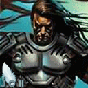
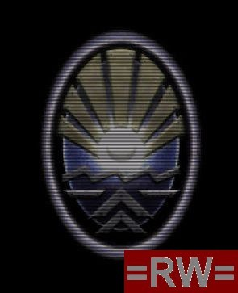

Forums galactiques > Taverne galactique : lieu de discussion informel > Tutorial d'Initiation : Bienvenue en Espérance!
| Naruse Réputation à la taverne : 1178 10/07 ETU 12:39 | Score : 0 Détails Non non je suis fédéré. Mais c'est bon je sais pourquoi j'ai marqué ça. C'est que j'ai fait un bref passsage en G1 en tant que guildien, et je me suis appuyé dessus. Merci d'avoir corrigé.
| ||
| Super mario Réputation à la taverne : -1 10/07 ETU 14:08 | Score : 0 Détails ok merci de l'eclairement alors c'est bon je peut coloniser ma planete sans perdre de vaisso.
| ||
| Albert Simon Réputation à la taverne : 1777 10/07 ETU 14:41  | Score : 0 Détails té, j'ai une question, la perte da sa planete natale a quelles consequences ? pour chacune des trois corporations ?
Merci | ||
| -[Aerÿnn]- Réputation à la taverne : 2661 10/07 ETU 15:03 | Score : 0 Détails Bonjour,
Albert Simon : Ce qui est certain, c'est qu'on ne peut donner sa pl-mère, c'est déjà pas mal comme protection ^^ Sinon, je suppose qu'on a plus accès à l'onglet Geostratégie et Economique... Enfin je ne sais pas... Je n'ai pas connu cette expérience... Donc si quelqu'un peut donner une réponse bien plus complète ;) J'ai seulement entendu dire que pour le cas des marchands : Ils peuvent se passer de leur planète-mère puisque leur force réside dans leur unités civiles (VME pour le commerce)... | ||
| Cesco Imperator Réputation à la taverne : 3122  10/07 ETU 15:20 | Score : 0 Détails Si j'en crois mon expérience passée...ça change pas grand chose.
Tant que tu as une planète, elle devient ta natale de substitution....donc, tes livraisons arrivent ailleurs. C'est surtout au niveau du symbole que c'est important. Ensuite, il est vrai que si un fédé ou un ally n'a plus de planètes, il ne peut plus être ravitaillé. D'où le problème pour eux. Néanmoins, cela n'a rien à voir avec la natale. Il me semble que les onglets sont toujours dispos, mais vides. Je suis flou, mais j'ai occulté cette affreuse expérience de ma jeunesse.... | ||
| Booster Réputation à la taverne : 1494  10/07 ETU 15:24 | Score : 0 Détails En ce qui concerne les onglets, ceux-ci sont toujours disponibles. Bien sûr, Géostratégie est vide, mais pas Géoéconomie, puisque cela permet de voir les ressources dont on dispose.
En pratique, ça ne sert pour ainsi dire pas à grand chose, sauf pour les comptes comme celui de la Divine des Jeux ou le Gouvernement (quoique le Gouvernement a peut-être des planètes...) | ||
| Albert Simon Réputation à la taverne : 1777 10/07 ETU 15:26 | Score : 0 Détails Merci pour cette reponse collective,
C'etait pour savoir dans l'organisation de la defense si cette planete avait une importance technique. Donc c'est non. edit : Le gouvernement a des planetes ;-) | ||
| Abbadon Réputation à la taverne : 225  10/07 ETU 16:43 | Score : 0 Détails J'aimerai savoir comment coloniser une planete vide
| ||
| -[Aerÿnn]- Réputation à la taverne : 2661 10/07 ETU 16:45 | Score : 0 Détails Bonjour,
En y lançant une invasion depuis l'onglet Géostratégie. Mais il te faut être dans le système concerné et avoir (si tu n'es pas fédé) des vaisseaux au point de coordonnée. Si tu l'es, c'est encore plus simple : Kamikazes... Note : Dans les deux cas, il faudra veiller à en envoyer assez. Mais sur ce coup-là, je sèche. Pas douée pour les chiffres et les défenses... | ||
| khalim Réputation à la taverne : 488  10/07 ETU 17:49 | Score : 0 Détails quand c'est une pucelle, envoies-en 35 (de kamis) pour être certain de l'avoir. 40 si c'est une planète natale.
pour les vaisseaux, en alliantiste, tu envoies 4 croiseurs légers et 20 chasseurs bombardiers par planètes, en fédéré, 2 CL et 15 CB, en guildien, achète des frégates d'invasion et envoies-en 25 par planètes. | ||
| -[Aerÿnn]- Réputation à la taverne : 2661 10/07 ETU 17:53 | Score : 0 Détails Faut voir aussi s'il a au moins l'Attaque niveau 1 non..?
Mais je n'en suis pas sûre ^^ (décidémment, on va dire que je suis un newbie...) | ||
| khalim Réputation à la taverne : 488 10/07 ETU 17:55 | Score : 0 Détails C'est sans aucune techno bien sur.
plus tu as une bonne attaque/défense/vitesse, moins tu as besoin de vaisseaux! Paraitrait même que les plus avancés n'ont besoin que d'un seul CB... | ||
| miles teg Réputation à la taverne : 319 10/07 ETU 23:16 | Score : 0 Détails Contrairement a ce qu'a dit Le commandant booster quand on perd sa planète natal l'onglet geostratégie n'est pas vide, il affiche le premier système ou l'ont possèdes des vaiseaux.
Moi j'ai un question technique: pour défendre un système avec de ioniques, est il suffisant d'attendre de voir aparaitre une flotte hostil sur le PC1 pour la bombarder ou faut t'il bombarder en préventif ? | ||
| -[Aerÿnn]- Réputation à la taverne : 2661 10/07 ETU 23:30 | Score : 0 Détails Bonsoir,
C'était moi qui avait dis ça, excuse encore ;) Pour ta question : Cela dépend de toi ;) Tu peux attendre qu'il y ait des gens comme tu peux bombarder régulièrement... Cela te coûte simplement en énergie (10 000). | ||
| Hecate de Lunargent Réputation à la taverne : 293 10/07 ETU 23:32 | Score : 0 Détails Petite question, les technologies comme vitesse, attaque defense (etc...) peuvent monter jusqu'a combien?
| ||
| -[Aerÿnn]- Réputation à la taverne : 2661 10/07 ETU 23:40 | Score : 0 Détails Bonsoir,
Je pense que le maximum est.... plus de 90 ? 100 peut-être..^^ En tout cas : http://matthieu.robin.free.fr/phpBB2/viewtopic.php?t=862&highlight=maximum+technologie Ou encore ici, visiblement, c'est bien 100... http://matthieu.robin.free.fr/phpBB2/viewtopic.php?p=7672&highlight=niveau+technologie#7672 | ||
| Hecate de Lunargent Réputation à la taverne : 293 10/07 ETU 23:43 | Score : 0 Détails Ok, merci beaucoup (effectivement je pouvais attendre avant d'arriver au bout moi...)
| ||
| Super mario Réputation à la taverne : -1 10/07 ETU 23:44 | Score : 0 Détails me semble que sa peut monter a 100% meme plus mais sa sert a rien d'avoir au dessus de 100 % sauf pour gacher du fric.
"Vous avez envoyé une flotte de 24 unités militaires à l'assaut de la planète « terra » (anciennement planète xxxxx) (système xxxx), possédée au moment de l'invasion par personne. Votre tentative d'attaquer par surprise a partiellement réussi. La défense ennemie s'est organisée lamentablement. Les défenses ennemies vous ont infligé de lourdes pertes : 8 unités n'ont pas pu être sauvées, à savoir : - 1 croiseur(s) léger(s) - 7 escadre(s) de chasseurs légers Les défenses planétaires ont elles aussi subi des pertes importantes." une question : quelle est le secret du sans pertes je ne veut pas perdre des vaisso moi deja que c'est long a construire (y-a-t-il un truc qui augmente la vitesse de creations ? que ce soit en batiment defence vaisso etc... ?) etant fédérer on me dit 20 vaisso j'ai envoyer 4 croiseur léger et 20 cl et j'ai des pertes ??? je reste perplexe pourtant j'ai suivit vos conseils. | ||
| y0 Réputation à la taverne : 43  10/07 ETU 23:50 | Score : 0 Détails Il n’y a hélas pas de solution miracle.
Tu aura toujours des pertes, le bute est d’en avoir le moins possible. Et il n’y a rien qui augment le vitesse de création des vaisseaux. Tu peut t’en faire livrer par contre. EDIT: Exacte pour les sondes et les navette d’exploration. Mais je me demande si les pertes subis ne vont coûter encore plus chère que d’envoyer quelque vaisseaux d’attaque en plus. | ||
| -[Aerÿnn]- Réputation à la taverne : 2661 10/07 ETU 23:53 | Score : 0 Détails Bonsoir,
Je pense que tu as mal lû, sur le conseil de Khalim.. Edit : j'ai un gros doute maintenant... Tu es bien fédé ? lol quand c'est une pucelle, envoies-en 35 (de kamis) pour être certain de l'avoir. 40 si c'est une planète natale. pour les vaisseaux, en alliantiste, tu envoies 4 croiseurs légers et 20 chasseurs bombardiers par planètes, en fédéré, 2 CL et 15 CB, en guildien, achète des frégates d'invasion et envoies-en 25 par planètes. Enfin pas de solution miracle oui, mais les sondes et navettes d'exploration peuvent être utiles pour savoir s'il y a beaucoup ou pas de défenses sur une planète... |
Forums galactiques > Taverne galactique : lieu de discussion informel > Tutorial d'Initiation : Bienvenue en Espérance!